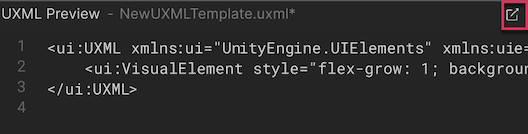
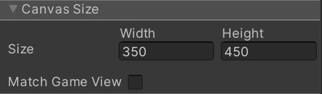
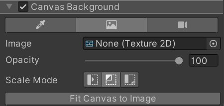

To open the UI(User Interface) Allows a user to interact with your application. Unity currently supports three UI systems. More info See in Glossary Builder window:
Select Window > UI Toolkit > UI Builder. This opens a UXML document that has been previously loaded with UIBuilder.
From the Project window, double-click a UXML file.
The following image shows an example UI Builder window:
UI Builder main window
Open and save UI Documents (UXML)
To open a UI Document in UI Builder:
Use the File menu inside the UI Builder ViewportThe user’s visible area of an app on their screen. See in Glossary pane toolbarA row of buttons and basic controls at the top of the Unity Editor that allows you to interact with the Editor in various ways (e.g. scaling, translation). More info See in Glossary and select Open….
In the Project tab of the Library pane, right-click on the document and select Open in UI Builder.
To open a UI Document (UXML) in your default text editor or IDE:
Use the inlineStyle file icon.
Go to the Project window > Assets.
Click the arrow in the middle of the UXML file icon.
Double-click the inlineStyle file icon.
Use the Open with IDE button.
In UI Builder, go to Library > Project tab.
Open the Assets folder.
Right-click on the UI Document (UXML) and select Open with IDE.
Use the UXML Preview pane.
In UI Builder, make sure your UI Document (UXML) is currently loaded.
Go to the UXML Preview pane.
Select the icon at the top-right corner of the UXML Preview pane.

UXML Preview pane
The currently opened and active UI Document (UXML) asset name is displayed in the Hierarchy pane as a root tree item, in the Canvas header inside the Viewport, and in the UXML Preview pane at the bottom of the Viewport. An asterisk (*) next to the name indicates unsaved changes.
To save a UI Document (UXML):
Use the File > Save menu in the UI Builder’s Viewport pane toolbar.
Use Ctrl/CMD + S. It also prompts you to save the SceneA Scene contains the environments and menus of your game. Think of each unique Scene file as a unique level. In each Scene, you place your environments, obstacles, and decorations, essentially designing and building your game in pieces. More info See in Glossary in the Editor.
Note: The Unity project-wide save doesn’t save the active UI Document (UXML) opened in the UI Builder.
StyleSheets
StyleSheets and the USS Selectors in UI Toolkit are used to share and apply styles across many elements and UI Documents (UXML).
The StyleSheets pane is where you can:
Add, reorder, or remove StyleSheets (USS) in the current UI Document (UXML).
Create, reorder, copy, or remove USS Selectors within StyleSheets to share styles across different elements.
Hierarchy
The Hierarchy pane contains the tree view representing the element hierarchy of the current document. It’s a superset of the hierarchy you see in the UXML text representation of the UI Document (UXML). Besides the elements created directly from UXML, the Hierarchy pane also contains elements created dynamically that only exist in the runtime of the UI. For example, the Hierarchy pane includes elements that are part of a Template instance (a different document instanced inside the current document), whereas the UXML would just have a single <Instance> tag.
You can use the Hierarchy pane to:
Select elements for inspecting or editing.
Cut, copy, delete, or reorder elements.
Open instanced template documents as sub-documents for in-place (in context) editing.
Check at once many elements’ style class lists, name attributes, and locally attached StyleSheets.
Elements appear in the tree according to their name attributes. If an element’s name attribute isn’t set, it appears according to its C# type. You can double-click an element to quickly rename it.
Click the ⋮ icon in the top right corner of the Hierarchy pane header to access a menu of display options.
Select Type to force the Hierarchy to display each element’s C# type, regardless of whether it has a name.
Select Class List to display each element’s style class list next to its Hierarchy entry.
Select Attached StyleSheets to display any locally attached StyleSheets next to their element.
Library
The Library pane is similar to the Project windowA window that shows the contents of your Assets folder (Project tab) More info See in Glossary in the Unity Editor. It lists available UI elements.
The Standard tab lists the standard built-in elements that Unity provides. These elements include standard styling that works for all supported Unity Editor and runtime themes.
You can change this view mode between tiles and tree view using the ⋮ icon in the top right corner of the Library window and choosing Tree View.
The Project tab lists custom .uxml assets in the Project. It also lists any custom C# elements that inherit from VisualElement and have their UxmlFactory set up to be instantiable via UXML. To preview any element in the Library’s Project tab, hover over it. The preview appears to the right of the Library pane.
To instantiate an element, do one of the following:
Drag it into the Hierarchy pane.
Drag the element onto the Canvas in the Viewport.
Double-click the element. This adds the element as a sibling of the currently selected element. If nothing is selected, the element is added at the root of the UI Document (UXML).
You can select elements in the Hierarchy window or in the Canvas. In the Hierarchy, hold down Ctrl/Cmd to select additional elements. In the Canvas, when an element is focused, you can click the element to select its parent element, which you can repeat to travel up the element hierarchy until it reverts back to the original element.
Viewport
The Viewport pane displays the output of a UI Document (UXML) on a floating resizable edit-time Canvas. The toolbar contains menus of UI Builder-specific commands, Viewport settings, Theme selector, and the Preview button. You can find additional UI Builder settings in the top-right corner of the Viewport under the ⋮ menu, including a shortcut to the UI Builder’s Settings in Unity’s Project SettingsA broad collection of settings which allow you to configure how Physics, Audio, Networking, Graphics, Input and many other areas of your project behave. More info See in Glossary.
Navigate in the Viewport
Pan and zoom to navigate in the Viewport. The UI Builder saves each UI Document (UXML)’s current pan and zoom state, and restores them after the UI Builder window reloads, a domain reloads, or when you close and re-open the same UI Document (UXML).
When you create and open a new document, the UI Builder resets the pan and zoom states.
To pan, do one of the following:
Middle-click and drag in the Viewport.
Hold down Ctrl/Cmd + Alt/Option and click and drag in the Viewport.
To zoom in and out, position the mouse pointer in the Viewport and do one of the following:
Position the mouse pointer in the Viewport, and rotate the mouse wheel.
Hold down Alt/Option and right-mouse drag. Drag right to zoom in, and left to zoom out.
Set up the Canvas
The Canvas is where you edit, preview, and interact with the UI Document (UXML) you are authoring. If you can’t see it, select the Fit Canvas button in the Viewport toolbar to bring it into view. The header of the Canvas displays the name of the currently loaded UI Document (UXML). An asterisk (*) next to the name indicates unsaved changes.
To resize the Canvas:
Inside the Viewport, drag the edges or corners.
Select the Canvas header to display the InspectorA Unity window that displays information about the currently selected GameObject, asset or project settings, allowing you to inspect and edit the values. More info See in Glossary window of the canvas, where you can enter the canvas’ width and height.
To match the Canvas size to the size of the Unity Game window, select the Match Game View checkbox.

CanvasSizeSettings
You can change the Canvas background to make it easier to edit the UI. To change the background, select the Canvas in the Inspector pane. You can set it to be a solid color, a specific texture (a mock-up from a UI Designer), or a live view from a CameraA component which creates an image of a particular viewpoint in your scene. The output is either drawn to the screen or captured as a texture. More info See in Glossary in an open Unity Scene:

CanvasBackgroundSettings
Any settings related to the Canvas, like its size, aren’t saved as part of the UI Document (UXML) but stored in a separate settings file for the next time you open the same UI Document (UXML).
Preview with a light or dark theme
By default, the UI Builder uses the Unity Default Runtime theme. You can preview your UI with a light or dark Editor theme. To do this, make sure the Editor Extension Authoring is enabled, and then select the Dark Editor Theme or Light Editor Theme from the themes dropdown list in the Viewport toolbar.
If you create a custom theme, you can also select it from the list to preview it in the Viewport.
Code Previews
As you build your UI, UI Builder automatically generates the underlying UXML and USS text, and displays them in the UXML Preview and USS Preview panes .
Inspector
The UI Builder Inspector pane is similar to the Unity Inspector window. The Inspector displays slightly different content, depending on the object you have selected inside the UI Builder:
Elements display an attribute section for per-element (UXML) attributes, a StyleSheets section to assign style classes and view applied styles from StyleSheets, and an Inlined Styles section to edit inline per-element style properties.
USS Selectors display a Style Selector section to change the selector query string and a Styles section to edit style properties.
Canvas displays a Canvas Size section to change the Canvas size, a Canvas Background section to change the edit-time canvas background, and a Document Settings section for per-document edit-time settings.
Enable Editor Extension Authoring for UI Documents (UXML)
By default, new UI Documents (UXML) created in the UI Builder have a setting saved within the UXML that marks them as runtime-only UI:
This means that, by default, the Library pane’s Standard tab only contains elements that work best at runtime.
To create UI for the Unity Editor, like custom Editor Windows or custom Inspectors, you can enable Editor Extension Authoring to see additional Editor-Only controls in the Standard tab of the Library pane.
To enable Editor Extension Authoring:
Select the Canvas header to display the Inspector window of the canvas, where you select the Document Settings > Editor Extension Authoring option:
In the menu on the Library pane, select Editor Extension Authoring.
Note: Unlike the other Canvas settings, this setting is saved in the editor-extension-mode attribute of the root element of the UI Document (UXML).
To enable Editor Extension Authoring on any new UI Documents (UXML) by default:
Go to Edit > Project Settings > UI Builder.
Select Enable Editor Extension Authoring by Default.
UI Documents (UXML) that you create outside of the UI Builder, for example, in a text editor or IDE, don’t have an Editor Extension Authoring attribute until you open them in the UI Builder. However, you can add the editor-extension-mode attribute manually in your UI Document (UXML) in a text editor or IDE at any moment. When you open an externally created UI Document (UXML) in the UI Builder for the first time, the Editor Extension Authoring attribute is set according to the default specified in the UI Builder project settings.

 is similar to the Project windowA window that shows the contents of your
is similar to the Project windowA window that shows the contents of your